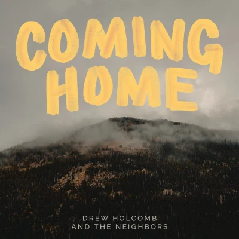
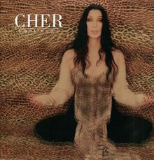

Trong cái đầu óc đang mụ mị vì những cung đàn, nốt nhạc của hắn, lờ mờ hiện ra một thứ gì đó rất mờ hồ và xa xôi rồi từ từ hiện rõ hình ảnh của một con đường vắng, gồ ghề bởi những mô đất nhấp nhô, khúc khủyu được soi rọi bởi thứ ánh sáng nhạt nhòe và yếu ớt của những ngọn đèn vàng.

Số phận, phải chăng thứ này chi phối cả cuộc đời chúng ta, là điều không thể thay đổi. Đừng bao giờ nói vậy, bạn có bao giờ nghĩ rằng số phận nằm trong chính bàn tay chúng ta. Mỗi ngày ta sống, cố gắng từng phút giây chẳng phải là để thay đổi tương lai và số phận hay sao? Nhiều lúc gặp những thất bại, khổ đau bạn nản chí và không muốn đi tiếp nữa. Hãy nhớ rằng: "Không có con đường trải hoa nào dẫn đến những điều tốt đẹp cả. Hy vọng là điều kỳ diệu, một điều cần được nuôi dưỡng và ấp ủ, và đổi lại nó sẽ làm chúng ta luôn sống động. Hy vọng có thể được tìm thấy trong mỗi chúng ta và nó có thể mang ánh sáng vào những nơi tăm tối nhất. Đừng bao giờ đánh mất hy vọng...”
Last updated: 2/2014